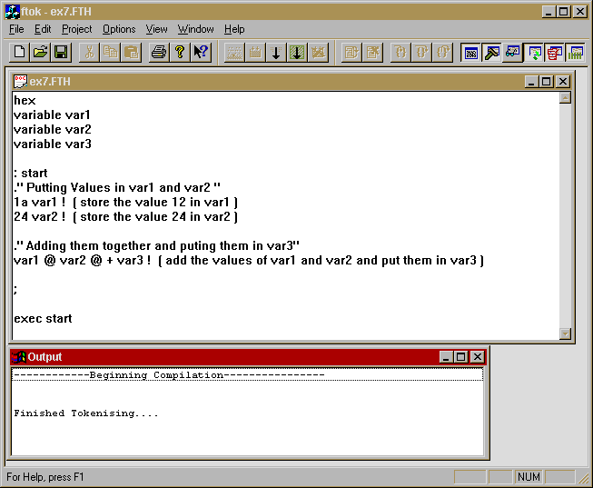
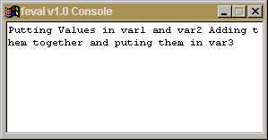
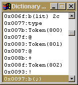
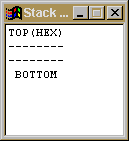
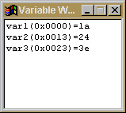
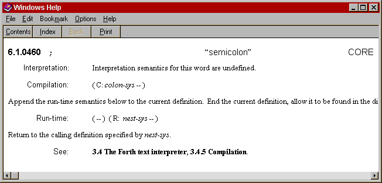

Sketches the history of Forth emphasising Forth's early advantage over the traditional procedural languages. The development of Integrated Development Environments (IDE) (and their extension to integrated development and debugging environment, IDDE) fuelled by the increasing power of desk top systems has left Forth behind together with the rise of Windows-based programming, with extensive libraries, etc masking the complexity of the API for such. The concept of a 'Visual Forth' is introduced together with the requirements that this (1) be object orientated; (2) have a Windows programming library; (3) provide symbolic debugging. A small worked example of a Forth-like IDDE is presented. Finally, the notion that Forth lends itself readily to the extension of the IDDE to form a IPSE/CASE tool via support for Literate Programming, Version Control, Project Management, and Code Analysis is discussed.
Forth was first introduced to an unsuspecting world in the early 70s when interactive systems were something of a novelty. It is generally accepted that its interactive nature was one of Forth's advantages over other, more traditional, languages of the time (such as the newly introduced C). The Forth development environment, although command based, provided developers with a fully integrated system where they could write and test their code without going though the tedious edit/compile/link/run cycle required by the traditional languages.
The vendors of these traditional languages investigated the idea of an interactive development environment, producing vender specific environments for their language(s), whereas the development environment provided by Forth vendors was, to large extent, vender independent. Although Forth venders did provide additional tools and utilities specific to their system.
The vendors of other languages developed their programming environments into fully integrated development environments (IDEs) taking full advantage of the increased processor, sound, and graphics power provided by modern hardware (eg, Cobol Workbench, Active Ada, Visual C/C++, Delphi). (There is even a Visual Basic, one of the other interpreted languages from the mid 70s.) But what happened to Forth in this period? In the early 90s vendors finally managed to agree on a standard way of accessing a data file provided by an operating system other than one of their own making.
It is clear from this that the other venders have grasped the nettle of providing IDEs. However, they have now gone beyond this by providing fully integrated development and debugging environments (IDDEs) with full graphic user interfaces (GUIs) and standard programming libraries to allow the software developer to develop their own GUI based application without needing to know the system in intricate detail. It is supprising that Forth vendors have not responded to this technology push, especilly as developers now expect these GUI based IDDEs, and simple libraries for making the best use of them.
While it is true that there have been a couple of attempts to provide this with Forth (most notably with Win32Forth and ProForth for Windows), they do not begin to show the integration or usability that most developers are demanding. MPE appear to be the only Forth vender attempting to provide this sort of functionality (ie their GUIDE extension to ProForth for Windows). All of the IDDEs provide a higher level of programming than the simple application programmer interface (API) calls: Object Windows Library (OWL), Microsoft Foundation Class (MFC), Abstract Windows Toolkit (AWT), Tcl/Tk, etc. One attempt as providing a Forth/Tk interface is discussed in [BoK96].
Given this situation, how can the Forth communicty catch up? One idea is to develop a "Visual Forth", the basic idea being to provide a GUI based IDDE for Forth software development. The idea presented here goes one step beyond the current IDDEs by providing the developer with a number of tools that support/enforce "good practice" in the engineering of software. On the face of it a tool of this nature sounds very simple, but there is much preparatory work that must be completed before one could launch out on such a project.
A GUI environment is simply too complex to understand easily and thus all of the IDDEs provide an object based model to simplify the programming. A number of Object Orientated Programming (OOP) extensions to Forth have been suggested over the years (from [Hel82] to [Dah95]) yet there is no standard extension. A project of this nature would have to conduct a survey of the different extensions. It would also have to study the OOP paradigm (complete with public/private operations, overloading, and multiple inheritance) with the intent of providing a standard/portable OOP extension.
It is normal for such a systems to provide a high level (object orientated) interface to the supporting windows environment (the IDE is built using this interface itself as an example of its power). A programming library of this type should be provided for three reasons:
Any such interface should be as portable as possible. Linking to one of the currently existing APIs (MFC, AWT, Tcl/Tk, etc.) would provide developers with a known data model, thus reducing the learning curve.
The introduction of the second `D' in the move from IDE to IDDE comes from the introduction of powerful symbolic debugging systems into the development environment. These systems have direct links into both the compiler and the editor environment allowing the developer to investigate their code using their own variable names, constants, etc. This frees the developer from the intellectual burden of having to interpret a memory address into a variable name, a number into its meaning, etc. There are few tools for this kind of debugging and investigation in Forth, yet with the dictionary being such an integrated part of the Forth system, we are in an ideal position to provide such a system. In general such tools have not been developed for Forth simply because the developer does have access to the dictionary. This is not sufficient reason to deny the developer the use of an even more powerful tool.
The following is a small example of an Open Boot Firmware system developed as part of an Honours project at the University of Paisley [Hob96]. Whilst a very simple system it illustrates some of the points of the previous section. In the first screen shot we see the full environment: Notice the button bar giving access to the various views/operations provided by the environment. This example shows the system after a successful compilation. The "Output" window shows the output/error report from the compilation process.

There are a number of options open to developers. They can enter the editor to continue development or to correct an error, they can "run" their program, or they can enter into the symbolic debugger and single step through the program. After entering into run mode a "console" window will appear by default. Their program will interact with this window. If they were to select the symbolic debugger then four new windows appear:
1 The "Console" window: As with "run" mode this will act as the main window for the application. By default all interaction with the user will appear via this window. 
"Console" Window2 The "Dictionary" Window: This shows the current instruction (the highlighted area), giving each instruction its name (as taken from the dictionary) if known. In this example, the Forth names are not known (it is not necessary to provide the names in Open Firmware), so the token number itself is presented. You can redirect the instruction pointer by simply clicking on the instruction, this will move the instruction pointer to that instruction, which will be executed when you next click on the step button. Step into and step over buttons are also provided, to allow the developer to investigate subroutines. 
"Dictionary" Window3 The "Stack" Window: The current status of the data stack is shown in this window. The values on the stack are shown as hex values, but can be switched to decimal values. 
"Stack" Window4 The "Variable Watch" Window: This shows the variables associated with the system, and their current value. As with the stack windows these values are shown in hex but can be switched (by means of an option) to decimal. 
"Variable Watch" Window
It should be noted that all four windows are updated with each step of the program. Thus for self modifying programs (or complex compilation definition) it is possible to see what is being written to the dictionary as each value is laid down.
A final point of interest from this example is the help facility. When in the editor, selecting a Forth word and pressing the help key (F1) brings up a help screen on that word. Double clicking on an instruction in the dictionary window also brings up the help screen for that word. This feature is only available for pre-defined words, user defined words would bring up a not-found screen or (in the dictionary window) a general description of subroutines. The following is an example of double clicking on the highlighted instruction in the dictionary windows (the b(;) instruction). Notice how the description starts with an extract from the ANSI Standard document or the IEEE Standard Document (or both) before providing its own interpretation if it is thought that the standard definitions require clarification.

A Forth based IDDE would itself be the target of further development. If the system were to be made extendable and allow third party "add-ons" it would be possible to endow the environment with the additional functionality required for a fully integrated project support environment (IPSE) complete with computer-aided software engineering (CASE) support. Initially four "plug-ins" can be identified that would take the IDDE down to road to becomming a IPSE/CASE tool, the first two are specific to Forth software development while the latter two would provide more general software engineering support:
A `Literate Programming' editor would allow the developer to present their code in the most effective way to describe the design of the system or application under development. The result would be a full description of the application that could be used for internal documentation (eg maintenance). The documentation of the design should be broken into chapter and section, the editor should provide for this sectioning of the document. The developer should be able to print the design document complete with cross referencing etc. The Holon system [Wej92] is a good example of these ideas applied to a Forth development environment.
In the introduction a brief history of compiler development (both Forth and more traditional languages) has been given. It is possible to see from this history that the vendors of traditional languages learned from the success of the interactive development environment provided by Forth (and a few other languages). Having grasped the concept they developed advanced interactive environments for their own languages going far beyone Forth's simple command based interface. Forth compiler developers appear not to have noticed this development, or at least not acknowledged it as a challenge to the Forth environment. The idea of a "Visual Forth" system to bring the Forth development environment up to the same level as other IDDE is presented. A number of requirements for such a system is listed. A sample application is given which, although it does not address the requirements, does demonstrate that the idea of a "Visual Forth" is viable.
A number of extensions have been suggested (some particular to the Forth language, and the Forth method of programming, others aimed at providing software engineering support) that would take the "Visual Forth" system beyond the capabilities of the most recent IDDE systems into the realms of IPSE/CASE.
The development of the Forth language has been allowed to slip while developers concentrate on their applications and introspection focused on margenal improvements in efficiency. If Forth is to flourish and develop as a language for the development of safety critical systems, the community must start to attract new developers, and to extend the tool support to surpass that provided for other languages. Current Forth development environments are a long way behind the current IDDEs, yet they have the potential to out preform these systems without adversly affecting the developers' method of working!